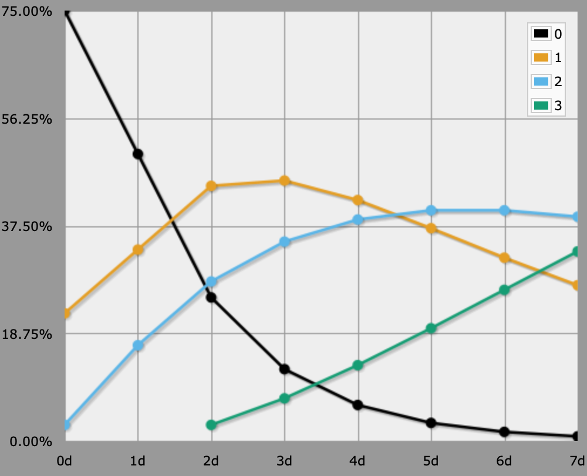

Blades in the Dark
The Blades in the Dark game has a simple dice rule to determine the success of an action. You roll a bunch of regular d6, then look at the highest number you got.
- 1–3: Not so good.
- 4–5: Success, but with undesired consequences.
- 6: Success without issues.
- More than one 6: Critical success!
So the only case in which more than one die matters is when you got at least one 6.
How many dice you roll depends on skill, assistance, whether you make a Devil's Bargain, and other things. It is possible to end up with a total of zero dice. If you still want to roll, then you roll 2d6 and keep only the lowest value.
You can use the below AnyDice program to determine the probability of each outcome. An output of 0 represents bad times, 1 a messy success, 2 a clean success, and 3 a critical success.
function: blades ROLL:s {
if 1@ROLL = 6 {
result: 2 + (2@ROLL = 6)
}
result: 1@ROLL >= 4
}
output [blades 2@2d6] named "0d"
loop P over {1..7} {
output [blades Pd6] named "[P]d"
}

If you manage to roll more than seven dice, then a critical success becomes more likely than a clean success.